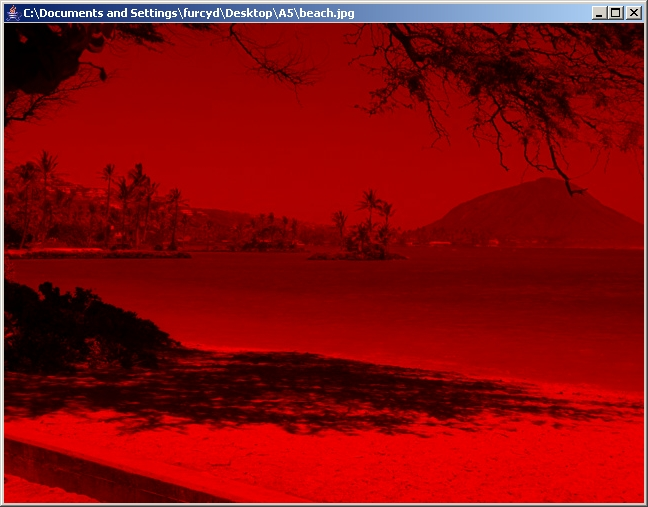

CS 262 - Fall 2020 -
Assignment #1
Part 1: Removing a color component
Back to the main assignment page
Each picture is a 2D array of pixels. Each pixel has a color. Each color, in the RGB scheme, has three components, namely red, green, and blue. The value of each component is an integer between 0 and 255 inclusive.
In this first part of the assignment, you must take the picture referred to by the instance variable pic and remove one of its components, which simply means setting its value to 0.
Consider the following original picture:
Here is what it should look like after you remove the red component, the green component, or the blue component, respectively from left to right. The last picture has both the green and blue components removed.

What should the picture look like when all three color components are removed?
For this part of the assignment, you must implement both the
removeGreen() and removeBlue()
methods. To help you get started quickly on this assignment, I have
given you the solution code for removing the red component.